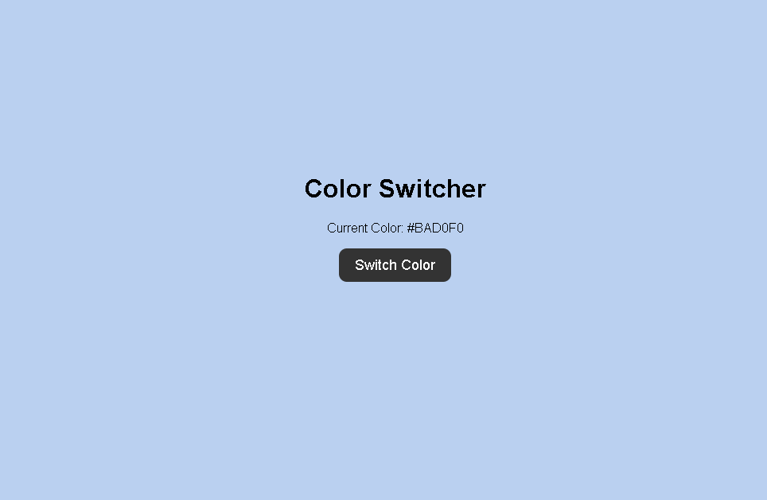
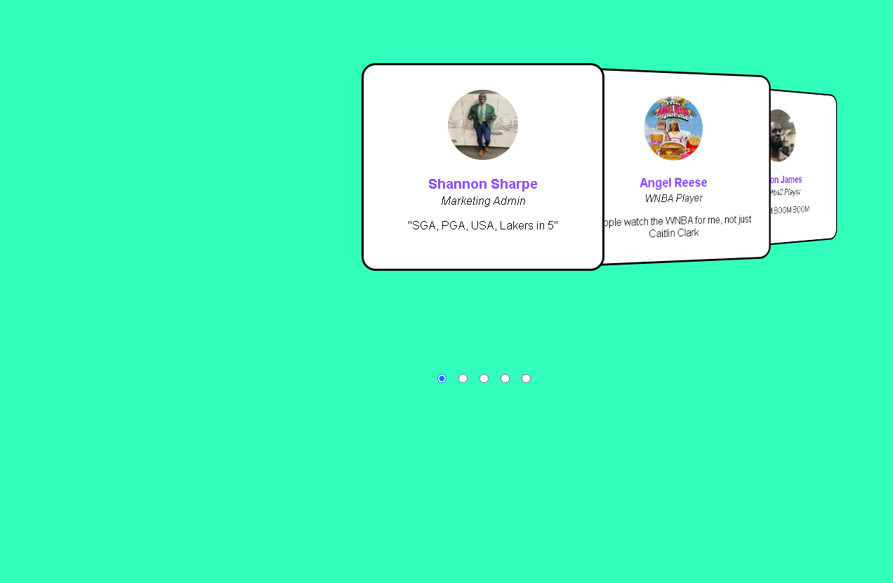
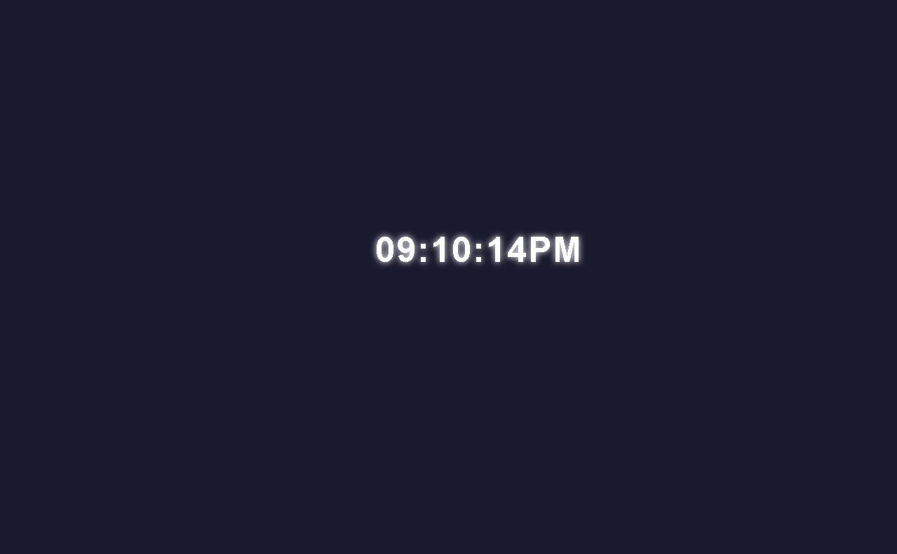

About Me
Hi! My name is Gurman Bhuller. I'm a junior in high school learning Computer Science Principles. This website shows the different codes and games I've created in various programming languages.
🎨 Color Switcher
This HTML tool helps you find a random color. Press the switch color button to see a new color! Click to see the code
🖼️ Image Slider
This JavaScript project is an auto-sliding image carousel showing quotes and images. Great for presentations!
⏰ Digital Clock
This was one of my first solo JavaScript projects. It's a live digital clock that updates in real time with seconds.
